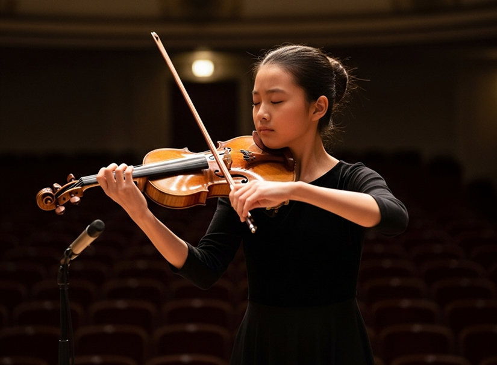

예술이 삶이 되는 순간,
당신 곁의 금호
음악과 미술이 주는 깊은 울림을 통해 일상을 풍요롭게 채우고, 모두가 향유하는 예술의 가치를 실현합니다.
재단사업
Music Projects
1천 명의 거장을 깨운
금호의 선율
금호문화재단은 1998년부터 영재, 영아티스트, 영체임버 시리즈를 통해 음악 유망주들의 데뷔를 지원해 왔습니다. 매주 토요일 금호아트홀 연세에서 열리는 무대를 통해 지금까지 1,000명이 넘는 음악가를 배출했습니다. 조성진, 손열음 등 세계 무대를 누비는 거장들이 금호를 통해 첫 발을 내디뎠습니다.

Visual Art Projects
동시대 미술의 발견,
내일의 시선을 깨우는 금호
금호문화재단은 1989년 금호미술관 개관 이래 한국 현대미술의 흐름을 진단하고 유망한 신진 작가를 발굴해 왔습니다. '금호영아티스트' 공모와 '금호창작스튜디오' 운영을 통해 작가들의 실험적인 창작 활동을 지원하며, 다채로운 기획 전시와 예술 교육으로 대중과 미술의 문턱을 낮추는 데 앞장서고 있습니다.